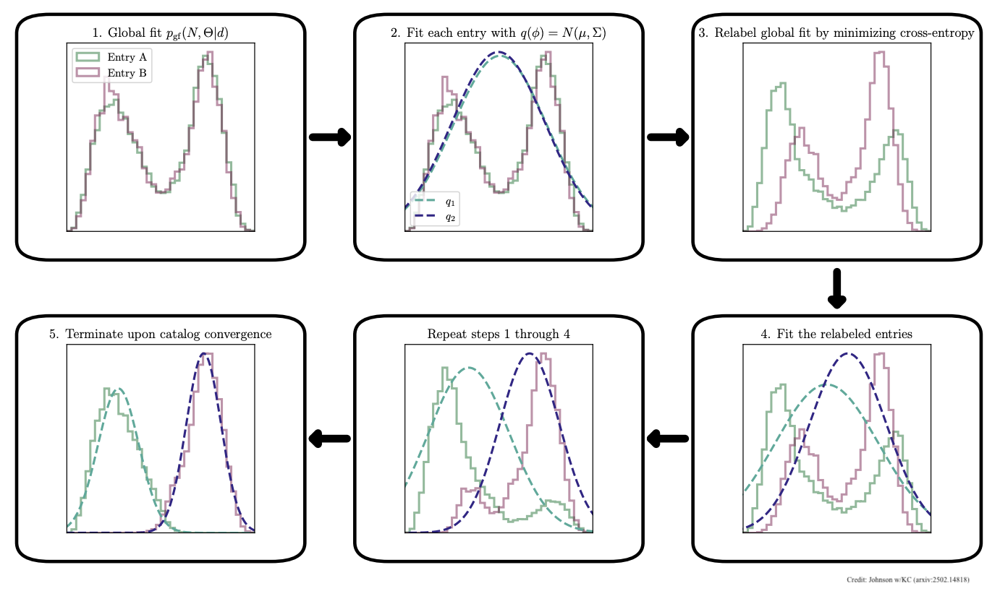

LISA
The LISA space-based gravitational-wave detector will face a unique challenge. The large number of signals overlapping in the LISA dataset requires a "global fit" in which an unknown number of sources are modeled simultaneously. This includes dozens to hundreds of massive black hole binaries, hundreds of extreme mass ratio inspirals, millions of galactic white-dwarf binaries, and many more. This introduces a "label-switching ambiguity" for sources in the same class that overlap, making it challenging to distill a traditional astronomical catalog. Unlike current ground-based detectors that typically see individual events, LISA will be extremely signal-dense, with millions of binary systems in our own galaxy, thousands of which will be resolvable, overlapping in frequency and time. The label-switching problem means that even though we can detect these thousands of resolvable binaries, it will be hard to tell which is which. This means that trying to catalog individual sources in order to study them further, is not straightforward.
Caltech postdoctoral scholar Aaron Johnson led a study that proposed a solution to the label-switching problem. The PETRA algorithm (it stands for something, but in reality it is named after a cat!) solves the label-switching problem by using an iterative strategy to sort out which detected signals correspond to which actual gravitational-wave sources. The algorithm first fits all the (at this point mixed up) sources with a simple model. It then systematically reassigns or "shuffles" the source labels - essentially trying different ways of matching the measured parameters to individual sources - and picks the arrangement that makes the most sense from an astronomical perspective. The final result is a clean catalog where each detected binary system has well-defined properties and a probability of being a real astrophysical source, transforming what was initially a confusing jumble of overlapping signals into an organized list that astronomers can use to study individual gravitational-wave sources throughout the galaxy.